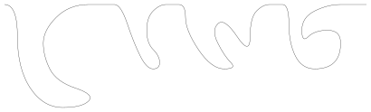
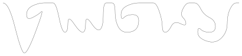
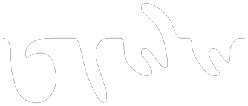
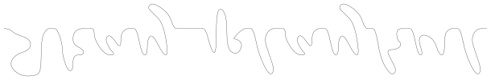
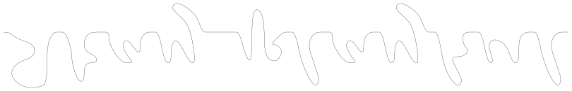
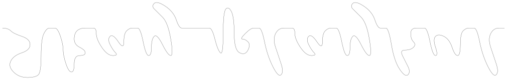
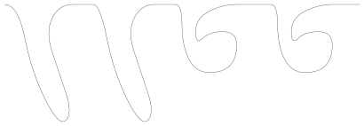

Love · 400 mm

R osservato 2.62 mm · incompatible
Difetti · Neon · Progetto 3DR osservato 2.62 mm · incompatible
Difetti · Neon · Progetto 3D
R osservato 2.38 mm · incompatible
Difetti · Neon · Progetto 3D
R osservato 1.67 mm · incompatible
Difetti · Neon · Progetto 3DR osservato 1.63 mm · incompatible
Difetti · Neon · Progetto 3DR osservato 1.85 mm · incompatible
Difetti · Neon · Progetto 3D
R osservato 2.08 mm · incompatible
Difetti · Neon · Progetto 3DR osservato 0.38 mm · incompatible
Difetti · Neon · Progetto 3D
R osservato 0.58 mm · incompatible
Difetti · Neon · Progetto 3D
R osservato 0.77 mm · incompatible
Difetti · Neon · Progetto 3D
R osservato 0.96 mm · incompatible
Difetti · Neon · Progetto 3DR osservato 0.89 mm · incompatible
Difetti · Neon · Progetto 3DR osservato 0.78 mm · incompatible
Difetti · Neon · Progetto 3DR osservato 0.30 mm · incompatible
Difetti · Neon · Progetto 3DR osservato 0.71 mm · incompatible
Difetti · Neon · Progetto 3D
R osservato 2.72 mm · incompatible
Difetti · Neon · Progetto 3DR osservato 0.56 mm · incompatible
Difetti · Neon · Progetto 3D